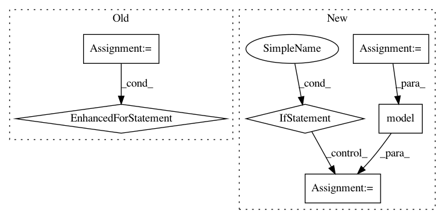

97d7f88df32ae58875d7534c7c517905a3eb1341,deepchem/models/torch_models/gat.py,GAT,forward,#GAT#Any#,113
Before Change
node_feat = self.embedding(node_feat)
// convolutional layer
for conv in self.conv_layers:
node_feat = conv(node_feat, edge_index)
// pooling
graph_feat = self.pooling(node_feat, data.batch)
graph_feat = F.leaky_relu(self.fc(graph_feat))
out = self.out(graph_feat)
After Change
This is only returned when self.mode = "classification", the output consists of the
logits for classes before softmax.
node_feats = g.ndata[self.nfeat_name]
out = self.model(g, node_feats)
if self.mode == "classification":
if self.n_tasks == 1:
logits = out.view(-1, self.n_classes)
softmax_dim = 1
else:
logits = out.view(-1, self.n_tasks, self.n_classes)
softmax_dim = 2
proba = F.softmax(logits, dim=softmax_dim)
return proba, logits
else:
return out
In pattern: SUPERPATTERN
Frequency: 3
Non-data size: 6
Instances
Project Name: deepchem/deepchem
Commit Name: 97d7f88df32ae58875d7534c7c517905a3eb1341
Time: 2020-11-05
Author: mufeili1996@gmail.com
File Name: deepchem/models/torch_models/gat.py
Class Name: GAT
Method Name: forward
Project Name: azavea/raster-vision
Commit Name: fe8fee4f05e08a6448d46b8f70d960f02ef048b8
Time: 2021-01-08
Author: AdeelH@users.noreply.github.com
File Name: rastervision_pytorch_backend/rastervision/pytorch_backend/pytorch_chip_classification.py
Class Name: PyTorchChipClassification
Method Name: predict
Project Name: deepchem/deepchem
Commit Name: f766c92a63fb67a99744dcb82c8c78406fbf905a
Time: 2020-11-04
Author: mufeili1996@gmail.com
File Name: deepchem/models/torch_models/gat.py
Class Name: GAT
Method Name: forward